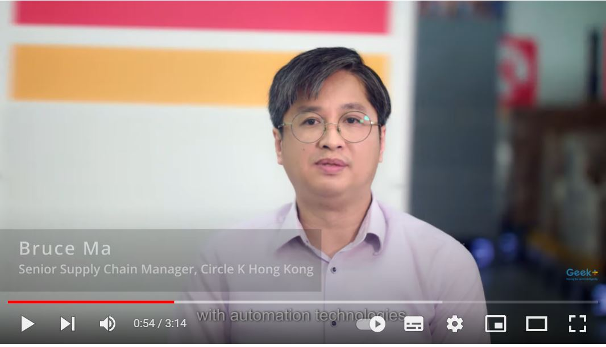

| Professional Summary: |
| With over 15 years of expertise in the logistics field, I have gained extensive experience in managing global retail chains, most recently as a key member of the team at Circle K Convenience Stores (HK) Limited. My proven track record of success in overseeing all logistics functions of the company, including Distribution Centre Operation, Transportation, 3 PL Management, Inventory Planning, and Global Purchasing Logistics, makes me a valuable asset to any organization seeking a highly skilled logistics professional. |
| I have held several positions at Circle K Convenience Stores (HK) Limited since year 2007, with my most recent role being Senior Supply Chain Manager. In this capacity, I was directly accountable to the Head of Supply Chain & Logistics and was responsible for overseeing all logistics functions of the company. |
| In 2022, Circle K partnered with Geek+ to implement Asia's largest smart warehouse for grocery deliveries. Over 100 AMRs have been deployed to better serve customers throughout Hong Kong. |
|  |
| home | 704 - 1055 11 Street SW, Calgary, Alberta, Canada, T2R 1G8 |
| alternate_email | k.ma787@mybvc.ca |
| call | 1(368)996-3388 |
| Technical Skills |
|
| Soft Skills |
|